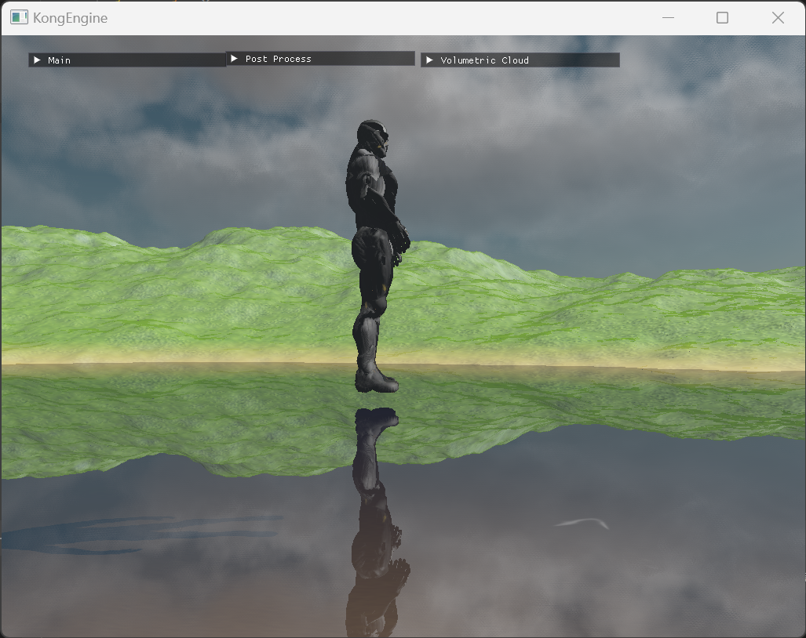
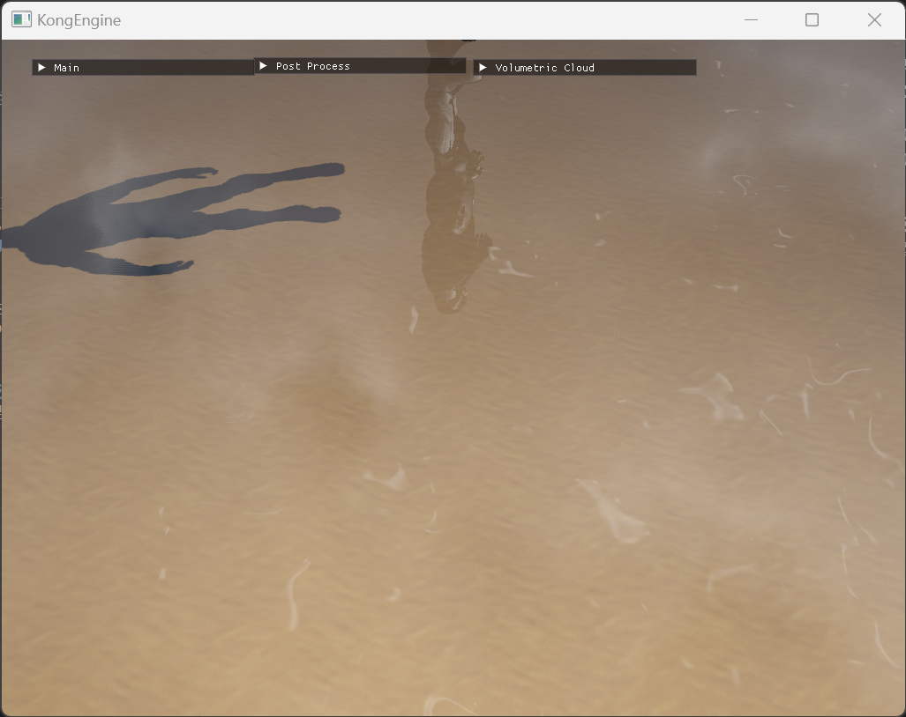
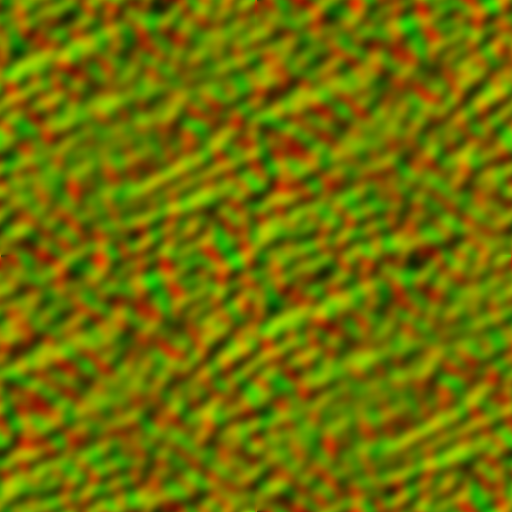
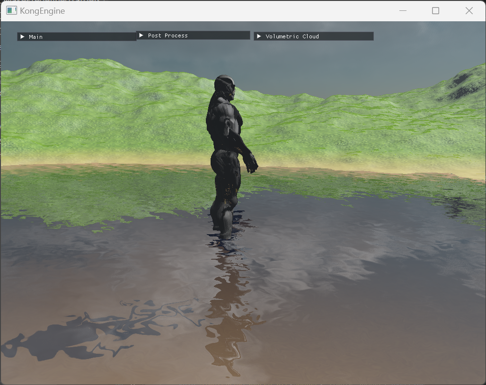
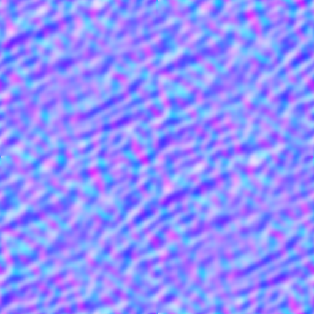
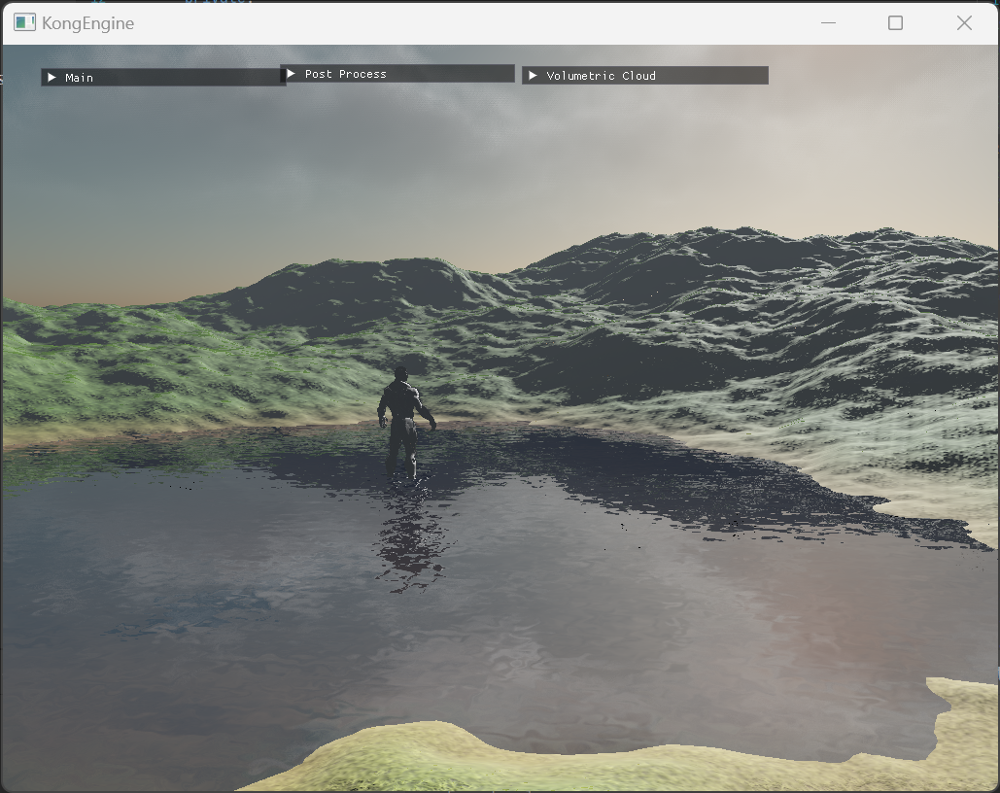
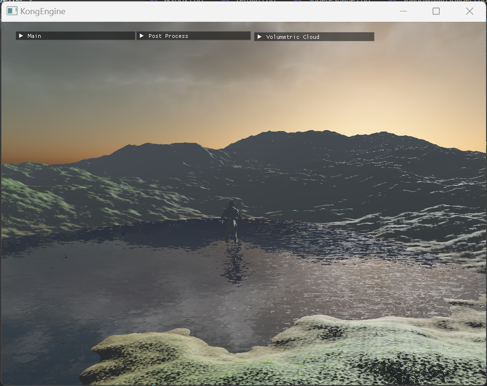

前言
在之前的文章，我们已经结合了反射纹理和折射纹理，有了一个初步的水面效果了。今天这篇文章我们会继续深入，优化水面的效果。
菲涅尔现象
如果你对基于物理的渲染管线（PBR）比较熟悉的话，那很有可能你已经知道菲涅尔现象（Fresnel Effect）是什么了。简单的来说，当光线照射到两种不同介质（例如从空气照射到玻璃或者从水照射到空气）的分界面时，一部分光会被反射，一部分光会折射进入另一种介质。菲涅尔反射描述了反射光和折射光的比例与光线入射角之间的关系。
根据菲涅尔方程（Fresnel equations），反射率会随着入射角的变化而变化。当光线垂直（入射角为 0°）入射到界面时，反射率是一个固定的值；而当入射角增大时，反射率会逐渐增大。当入射角接近 90°（掠射角）时，反射率趋近于 1，几乎所有的光都会被反射。
在渲染水面时，当视线垂直于水面，可以看到水下一定的深度，此时光大部分折射进入水中，反射的较少。但当视线与水面夹角很小时（接近平行于水面看），水面就像一面镜子，反射很强。这就是菲涅尔现象在起作用。
下面的两张截图表现了这个效果。


那么该如何实现这种效果呢，很简单，在渲染的时候，我们可以根据视线和水面的夹角来调整反射纹理和折射纹理的混合参数。
1
2
3
4
5
6
7
8
9
10
11
12
13
14
|
vec3 view_vector = normalize(cam_pos-frag_pos);
float fresnel_blend = clamp(dot(water_normal, view_vector), 0.0, 1.0);
fresnel_blend = pow(fresnel_blend, 2.2);
vec4 color = mix(reflection_color, refraction_color, fresnel_blend);
|
水面的动态
好了，我们的水面现在看起来很棒，但是太过于平静了。现在的水面就像是一面镜子，一块玻璃，现实中的水面会因为风或者其他接触物的影响有波纹或者扰动产生，我们需要想办法增加这种效果。
水的动态效果模拟其实是一个很深的研究课题，像虚幻引擎的water插件的水面模拟采用了gerstner wave，通过不同频率、波长的波的叠加来实现复杂的水面效果（其实这就和地形生成的FBM类似，详情可以参考这篇文章）。如果想要做的更加真实一点，可以采用Navior-Stroker方程来模拟，这是一个经典的用于模拟水体的方法，可以带来更加真实的效果，当然消耗也更大。
我们今天就来介绍一种最为简单的方法，利用贴图来实现这个效果。
dudv map
我们在这里需要使用一种叫做dudv map的资源，常见的dudv map如下：

dudv map是用来辅助表现水面的扰动程度的，如果你有基础的渲染知识的话应该知道法线贴图（normal map），其实dudv map和法线贴图的思路是类似的。
我们可以看到dudv map整体是呈黄色，因为dudv map主要是包含了X轴（红色）和Y轴（绿色）的数据，黄色是由这两种颜色组合而来。使用dudv map的方法可以参考下面的代码：
1
2
3
4
5
6
7
8
9
10
11
12
13
14
15
16
17
18
19
20
21
22
23
24
25
26
27
28
29
30
31
32
33
34
35
36
37
38
39
40
41
42
43
44
45
46
47
48
49
50
|
#version 450 compatibility
#extension GL_ARB_shading_language_include : require
#include "/common/common.glsl"
in vec3 out_pos;
in vec3 out_normal;
in vec2 out_texcoord;
in vec4 clip_space;
layout (location = 0) out vec4 FragColor;
uniform sampler2D reflection_texture;
uniform sampler2D refraction_texture;
uniform sampler2D dudv_map;
void main()
{
vec2 ndc = clip_space.xy / clip_space.w;
ndc = ndc / 2.0 + vec2(0.5);
vec2 reflection_coord = vec2(ndc.x, -ndc.y);
vec2 refraction_coord = ndc;
vec2 distorted_texcoords = texture(dudv_map, vec2(out_texcoord.x, out_texcoord.y)).rg * 0.1;
distorted_texcoords = out_texcoord + vec2(distorted_texcoords.x, distorted_texcoords.y + move_factor);
vec2 total_distort = (texture(dudv_map, distorted_texcoords).rg * 2.0 - 1.0) * wave_strength;
reflection_coord += total_distort;
reflection_coord.x = clamp(reflection_coord.x, 0.001, 0.999);
reflection_coord.y = clamp(reflection_coord.y, -0.999, -0.001);
refraction_coord += total_distort;
refraction_coord = clamp(refraction_coord, 0.001, 0.999);
vec4 reflection_color = vec4(texture(reflection_texture, reflection_coord).xyz, 1.0);
vec4 refraction_color = vec4(texture(refraction_texture, refraction_coord).xyz, 1.0);
vec3 view_vector = normalize(matrix_ubo.cam_pos.xyz-out_pos);
float fresnel_blend = clamp(dot(out_normal, view_vector), 0.0, 1.0);
fresnel_blend = pow(fresnel_blend, 2.2);
vec4 color =
mix(reflection_color, refraction_color, fresnel_blend);
FragColor = color;
}
|
dudv map主要用于制造水面的扰动效果，实现的效果如下：

哇，已经很有感觉了。当然最好在计算distorted_texcoords的时候增加一个随着时间变化的变量，加上动态效果的话会更有真实感。
法线贴图
在上面我们已经提到了法线贴图，在渲染水面的时候其实也可以使用法线贴图来增加实感效果。

一个比较好的法线贴图使用的地方是在水面高光的渲染上，现在的水面有了扰动，但是和光源的交互还是相对较弱的。增加了高光后可以进一步加强水面的实感表现。

1
2
3
4
5
6
7
8
9
10
11
12
13
14
15
16
17
18
19
20
21
22
23
24
25
26
27
28
29
30
31
32
33
34
35
36
37
38
39
40
41
42
43
|
....
uniform sampler2D normal_map;
void main()
{
......
vec3 specular_highlights = vec3(0);
if(light_info_ubo.has_dir_light.r != 0)
{
vec4 normal_map_color = texture(normal_map, distorted_texcoords);
vec3 normal = normalize(vec3(normal_map_color.r * 2.0 - 1.0, normal_map_color.b, normal_map_color.g * 2.0 - 1.0));
vec3 light_dir = light_info_ubo.directional_light.light_dir.xyz;
vec3 light_color = light_info_ubo.directional_light.light_color.xyz;
vec3 reflected_light = reflect(light_dir, normal);
float specular = max(dot(reflected_light, view_vector), 0.0);
float shine_damper = 100.0;
specular = pow(specular, shine_damper);
float reflectivity = 1.5;
specular_highlights = light_color * specular * reflectivity;
}
.....
vec4 blue_color = vec4(0.1, 0.2, 0.6, 1.0);
vec4 color = mix(
mix(reflection_color, refraction_color, fresnel_blend)
, blue_color
, 0.1) + vec4(specular_highlights, 0.0);
FragColor = color;
}
|

水面终于有了波光粼粼的效果了。
在上面的代码中，我在最后增加了一点点蓝色的tint，增加表现效果。
结语
好了，这就是一个简单的水面效果渲染的流程了。这个流程很简单易懂，但是有这不错的效果，希望能够对大家有所帮助。
另外上面所有的参数，可以根据实际的需求或者审美来调整。比如说调整reflectivity来改变高光的强度；调整fresnel的power系数来改变菲涅尔现象的表现。
what’s more？
当然水的渲染，或者说模拟是个很深入的话题，除了我前面提到的gerstner wave和navior-stroke方法，还有很多其他的内容，比如说可以根据水的深度来让深水区的颜色有更深的蓝色晕染，浅水区的颜色更加透明。后续有时间可能会找其中的一两种优化方法再来讨论一下。
参考资料
ThinMatrix’s OpenGL water guide
Simplest way to render pretty water in OpenGL